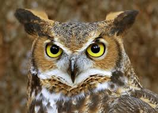

Corujas
O termo coruja é a designação comum das aves estrigiformes, das famílias dos titonídeos e estrigídeos.
Na região do Amazonas, algumas espécies também são chamadas de murutucu.
Tais aves possuem hábitos notívagos e voo silencioso devido à estrutura das penas.
alimentando-se de pequenos mamíferos (principalmente de roedores e morcegos), insetos e aranhas.
Engolem suas refeições por inteiro, para depois vomitarem pelotas com pêlos e fragmentos de ossos.
Os filhotes de corujas podem ser vítimas de outros predadores, como o gavião.
As corujas podem girar sua cabeça e pescoço em até 270º em qualquer direção
e apesar do tamanho do seus olhos, elas não conseguem mexer os seus globos oculares.
O símbolo da Deusa grega da sabedoria, Atena, é uma coruja do género Athene: o mocho-galego.
Também considerada o símbolo da filosofia.